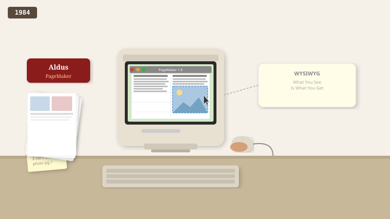

1984
PageMaker, 화면에서 지면을 설계하다
Aldus PageMaker가 출시되자 디자이너들은 “모니터에서 바로 레이아웃을 짤 수 있다.”며 환호했습니다.

1980년대 초까지 잡지나 책을 만든다는 건 완전히 전문가의 영역이었습니다. 내 글이 인쇄물처럼 보이게 하려면 인쇄소에 직접 가서 활자를 손으로 배치하거나, 수천만 원짜리 전문 장비를 써야 했어요. 동네 카페가 메뉴판을 만들거나 학교 동아리가 회보를 만들려면 전문 디자이너에게 큰 비용을 지불해야 했고, 결과물을 받기까지 일주일이 걸렸습니다.
1984년 매킨토시가 등장하면서 누군가 이렇게 생각했어요. "이 작은 컴퓨터 화면에서 직접 글자와 사진을 배치할 수 있잖아? 그리고 화면에 보이는 그대로 새로 나온 레이저 프린터로 뽑을 수 있다면, 인쇄소 없이도 집에서 잡지를 만들 수 있는 거 아닌가?"
그렇게 1984년 Aldus PageMaker가 등장했습니다. 디자이너가 매킨토시 화면에 글과 사진을 마우스로 배치하면, 그대로 종이에 인쇄됐어요. 한 잡지사 편집장은 첫 사용 후 감격했습니다. "인쇄소에 의뢰하던 일을 우리 책상에서 직접 할 수 있어요. 비용이 10분의 1로 줄고, 결과물을 즉시 확인할 수 있어요." 새 단어가 생겨났습니다 — "데스크톱 퍼블리싱"(책상 위 출판).
오늘날 여러분이 카페 메뉴판을 직접 만들거나, 학교 행사 포스터를 짜거나, 자영업자가 명함을 디자인할 때 쓰는 모든 도구 — 인디자인, 캔바, 미리캔버스, 망고보드 — 가 1984년 PageMaker의 후손이에요. "내가 만든 결과물이 진짜 인쇄물처럼 보인다"는 마법이 모든 사람의 손 안으로 들어온 시작점이었습니다.
PageMaker는 WYSIWYG 레이아웃 패러다임을 보급했습니다. 콘텐츠와 스타일을 분리하려는 이후 웹 기술에도 영향을 주며, 여행잡지와 뉴스레터 제작 방식이 근본적으로 바뀌었습니다.